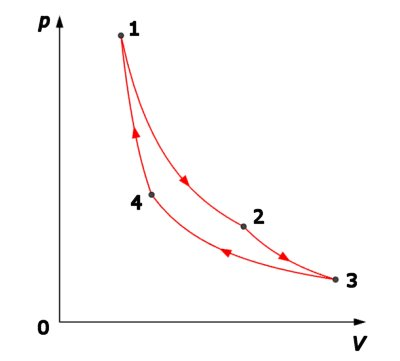
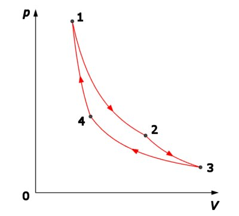
Figura 2-1. Ciclul Carnot reversibil.
Elemente de termodinamică. |
Al doilea principiu al termodinamicii |
H-2. |
Ciclul Carnot |
Încercând să fundamenteze teoretic funcţionarea motoarelor termice, francezul Sadi Carnot propune în 1824 o succesiune de transformări destinată obţinerii celui mai mare randament posibil de transformare a căldurii în lucru mecanic.
Ciclul Carnot este alcătuit doar din transformări reversibile. Două dintre transformări sunt izoterme şi celelalte două sunt adiabate (figura 2−1).
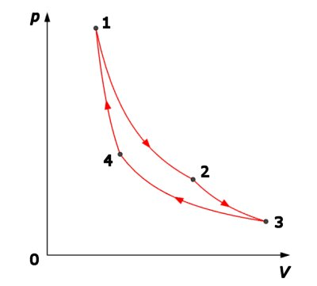
Figura 2-1. Ciclul Carnot reversibil.
Substanţa de lucru (un gaz ideal) primeşte căldură izoterm la temperatura ridicată T1 şi cedează căldură izoterm la temperatura mai coborâtă T2.
 Provocarea 2-1
Provocarea 2-1
Cât este oare randamentul ciclului Carnot?
Două dintre transformări fiind adiabate, este convenabil să calculezi randamentul ciclului pornind de la:
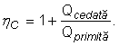
Gazul primeşte căldură în timpul transformării izoterme 1→2:
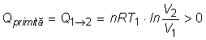
şi cedează căldură în timpul izotermei 3→4:
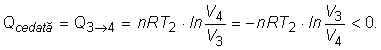
Astfel, expresia randamentului ciclului devine:
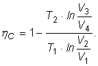
Temperaturile şi volumele atinse în timpul ciclului nu sunt independente. Din ecuaţia adiabatei 2→3:
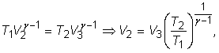
iar din ecuaţia adiabatei 4→1:
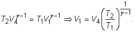
Rezultă că între volume există relaţia:
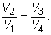
Astfel, expresia randamentului ciclului Carnot este:
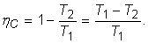
Randamentul ciclului Carnot depinde doar de temperaturile extreme între care se desfăşoară. Randamentul creşte dacă temperatura maximă este mai mare, iar temperatura minimă este mai mică.
Provocarea 2-2
Cât este randamentul unui ciclu Carnot care se desfăşoară între temperaturile de fierbere şi de îngheţ ale apei la presiune atmosferică normală?
Dar dacă temperatura maximă la care se desfăşoară ciclul creşte cu 100 K, fără modificarea temperaturii minime?
Dacă diferenţa dintre cele două temperaturi extreme se micşorează, randamentul devine din ce în ce mai mic.
Provocarea 2-3
Cât este randamentul unui ciclu Carnot care se desfăşoară între temperaturile extreme 274 K şi 273 K?
La limită, când temperaturile extreme devin egale, randamentul devine nul!
Aceasta înseamnă că nu poate fi obţinut lucru mecanic printr−un proces ciclic funcţionând la o singură temperatură (proces monoterm). Aşadar, căldura nu poate fi tranformată integral în lucru mecanic!